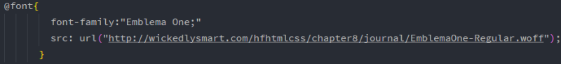

字体
字体
通过CSS可以摆脱浏览器默认的字体大小和样式。
- 1.font-family定义字体种类
- 可以用它来指定页面中各元素使用的字体种类。大部分计算机上通常只安装了部分字体，所以在选择字体时要当心。font-family包含一组有共同特征
的字体，共有5个字体系列:sans-serif、serif、monospace、cursive、fantasy。每个字体系列都包含很多种字体，以下是关于它们的介绍:
sans-serif:无衬线字体，与serif相比，通常认为sans-serif在屏幕上更简单大方易认读。
serif:有衬线字体，这种字体一般出现在新闻报纸上，衬线就是字母末端的装饰性的“小细线”。
monospace:等宽字体，即每个字符的宽度都是相同的，这种字体主要用于显示代码。
cursive:这种字体看起来像手写的，有时会在标题中见到这种字体。
fantasy:这种字体风格各异，是种装饰性字体。
总结:sans-serif字体外观清晰，可读性好。serif字体看起来高雅，传统。monospace字体就像打印机打出来的。cursive和fantasy字体看
起来很好玩，很有趣，用于装饰。
不同计算机上可用的字体往往不同，所以导致用户机器上安装的字体可能与你使用的不同，不过有一种办法可以弥补，那就是创建一个首选字体列表。
示例:
只使用一种字体:body{ font-family:sans-serif; }
首选字体列表:body{ font-family:Verdana,Geneva,Arial,sans-serif; }
当浏览器看到这个列表时，会按顺序在用户电脑上查找是否有对应字体，若第一个可用则使用第一个，若用户机器上没有安装第一种字体，则查看第二个，
依此类推，若都不可用则使用浏览器默认字体。大多数PC上都有Verdana，大多数Mac上都有Geneva，而Arial在PC和Mac上都很常见。
不过如果你觉得某种字体特别好，一定要使用它，就可以使用Web字体,这要用到CSS的一个比较新的特性:@font-face
规则，这个规则允许你定义一种字体的名字和位置，然后就可以在页面中使用。
Web字体能够直接向用户提供字体，下面介绍它是如何工作的:
首先，要将字体文件存储在服务器上（即放在Web上），字体文件扩展名是“.woff”，它是Web开放字体的文件格式。然后:
1.浏览器获得一个HTML页面，并显示它。
2.显示过程中浏览器知晓需要使用Web字体文件，于是再向服务器发送请求.
3.获取字体文件后，浏览器正常显示该字体。
@font-face使用示例:

与正常规则不同，@font-face规则会建立一个字体，指定一个font-family名，因此规则以@font-face开头，然后在规则下可以用font-family
属性为这个字体创建一个名字，可以使用任何你喜欢的名字，不过最好与原字体名一致，最后，src属性告诉浏览器该字体的位置，为了保证可用，可以
指定多个URL，浏览器会逐个查看。
很好，现在已经用@font-face在浏览器中加载了一个字体，接下来就是使用字体，例如下面这样:
h1{ font-family:"Emblema One"; }
大功告成，Web字体成功使用。
注:
1.如果一个字体名中包含多个单词，只需要为其加上双引号即可，像这样:font-family:"Courier New",Courier;
2.serif和sans-serif并不是具体的字体名，在声明中那样写，浏览器会在该系列字体内寻找它自己的默认字体。
3.@font-face并不选择一个元素，利用它，可以获取一个Web字体，并为它指定名字。
4.使用Web字体的缺点是，获取它需要一些时间，因此影响页面第一次显示时的速度，另外，管理多个字体也是件比较痛苦的事情，最后，有些移动
设备的浏览器并不支持Web字体，所以设计时一定要考虑候选字体。
5.有些网站可以提供免费的字体资源，例如FontSquirrel（http://www.fontsquirrel.com/）和Google Web字体服务（http://www.goog
le.com/webfonts）。
- 2.font-size控制字体大小
- 用CSS指定字体大小有很多方法,常用的有四种:像素、关键字、百分号%、em。
像素:用像素指定文字大小就是告诉浏览器字符的高度是多少像素，像这样写:font-size:20px;,就是字符高20像素。
关键字:关键字本质上和像素是相同的，只是换了一种方式表达，像xx-small，x-small，large等，浏览器是把它们转换成默认的像素值来显示的。
百分号%:这是种相对度量单位，需要被选定元素有一个父元素，比如这样写h1{ font-size:200%; }，就是说h1字体大小是其父元素的200%倍。
em:其实和百分号基本一样，h1｛ font-size:1.2em; ｝的意思就是h1的字体大小是父元素的1.2倍。
总结:使用像素和关键字可以精确掌握每个元素的字体大小，但是修改麻烦，比如整体的大小放大一些，而使用百分号%和em就很方便，例如将body设置为10px，
其它元素都使用相对度量单位设置，那么只需要修改body元素的字体大小就可以改变所有元素的字体大小。
注:如果将body用相对度量单位设置，那它的参照对象就是浏览器的默认字体大小，通常是16px。
- 3.font-weight设置字体粗细
- 这个属性有两个常用的参数:bold粗体和normal标准。此外还有两个相对的参数:bolder和lighter，更粗和更细，同样的也是相对于父元素，不过这两个很少
使用，因为没有多少字体支持粗细程度的微小差别，实际上这两个值通常没有任何效果。
- 4.text-decoration为文本增加更多风格
- 参数:italic或oblique,都是斜体。